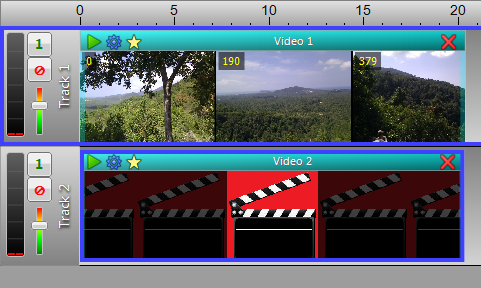

VideoMeld supports an unlimited number of video layers. Each track is a separate video layer. These layers are drawn in the order the tracks appear on screen. Video in Track 1 is drawn first, then video in Track 2 is drawn next, on top of Track 1, then video in Track 3 is drawn on top of that, and so on. This means that the last track is always drawn on top of all other tracks.
It is important to consider the layer order when adding new video sections to a project. For example, if you wanted Video 2 to appear as a picture-in-picture in Video 1:

Video in Track 1 is drawn first, then the video in Track 2 is drawn on top of it. Since Video 2 was resized to be smaller, it covers only part of Video 1.
Layer Order Output
Layering is important when using effects as well. In most cases, the section being faded in or transitioned to should be placed in the last track.
Use Effect | Effect Toolbar to display a toolbar containing all effects available and drag-and-drop them or a section or use Effect | Add Or Modify to display the video effects editor. Video effects can either modify the video in some way, such as making it appear blurred, or perform a transition from one video to another, such as a wipe.
Start and Finish times determine when the effect starts and finishes within the section.
Transition effects usually have a Progress percentage setting. In most cases at 0% only the top video is shown without modification. At 100% only the underlying video is shown. At 50% a blend of the top and underlying video is shown. By adjusting the graph, the progress can be made to go forward (0% to 100%), backward (100% to 0%), or remain constant (horizontal at 50%).
See Also
Crossfade Video
Video Effects